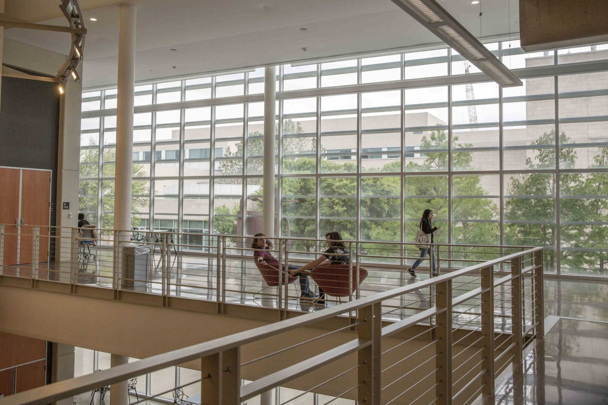
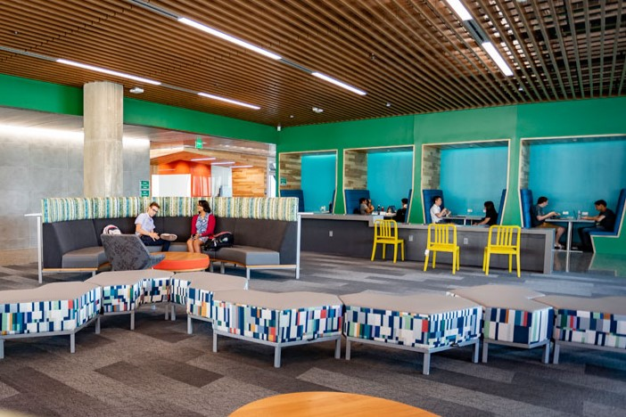
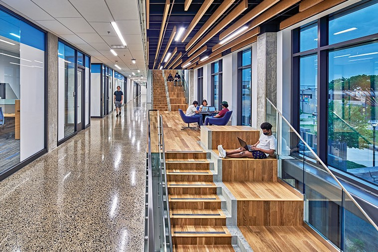

Don't know where to go on the University of Texas at Dallas to study for your classes? Perhaps the library or your go-to study spot is getting boring and you need a change of scenery. If you're wanting to find the best spots on UTD campus to do your work comfortably, this is for you! Here are some of the top spots you should try out.
1. ATEC 2nd Floor
The second floor in the ATEC building is a great place to go if you enjoy natural lighting and big windows whenever you study. There aren't that many accessible outlets, but seats are usually open and the ATEC building never gets too loud on a regular day.
2. JSOM 3rd Floor
If you want minimal distractions, the 3rd floor of JSOM is a good choice for you. There is not much noise around this area and it's pretty easy to find somewhere to sit.
3. SSB Lobby
The Student Services Building lobby is a great place to study if you want comfortable seating and a building that isn't too busy. There are a lot of seating options especially if you study in bigger groups. Outlets are more limited, however, you can go up one floor and find a few more spots with outlet accessibility.
4. ESCW 2nd Floor
The second floor of ECSW has a variety of seating where you can study and it has good outlet accessibility. It gets busy from 12pm-6pm so it might be difficult to find an open spot within that time. Regardless, it's a nice spot whenever it is not so busy, especially if you get yourself one of the booths.
5. JO 5th Floor
The fifth floor of JO is a nice area to go to if you want a quiet, generally empty space to study at. It's a smaller area but not too many people come here so there will be minimal distractions if you really want to lock in.
6. SCI Building Stairs
The stairs at the Sciences building is a nice studying experience. There's good access to outlets here and the windows are a nice addition to your studying experience.
That concludes some of the best study spots around campus at the University of Texas at Dallas! Give one of these spots a try and maybe it'll be your new favorite. As a reminder, these are just a few of the many places on campus, so feel free to explore and let us know if you discover another good spot to study!